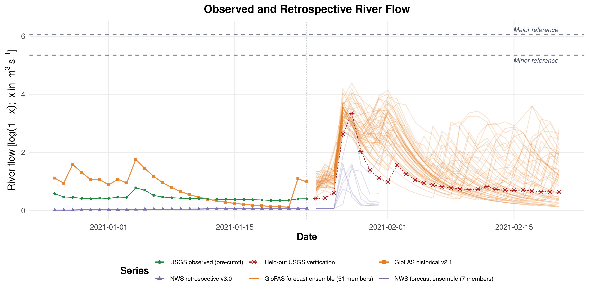
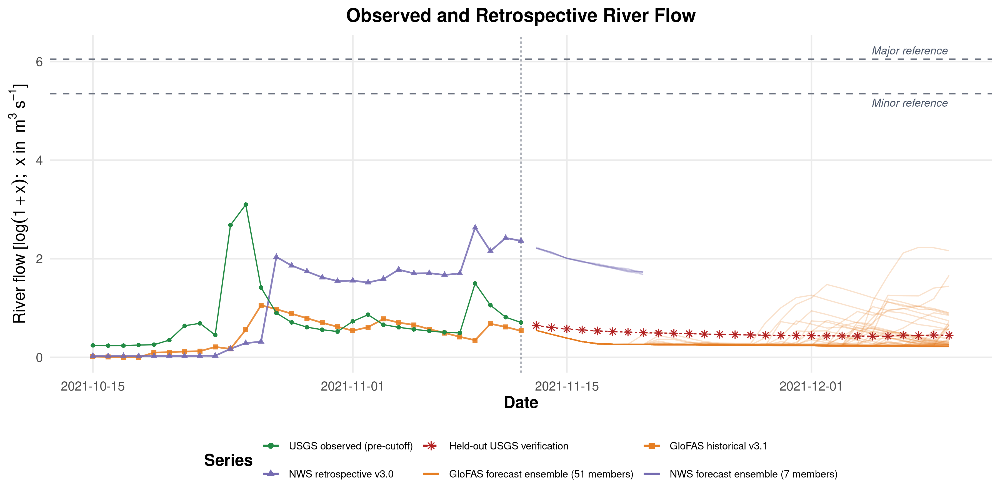
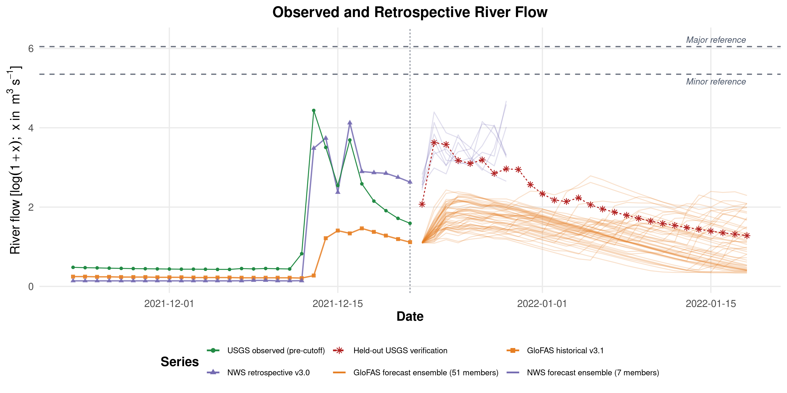
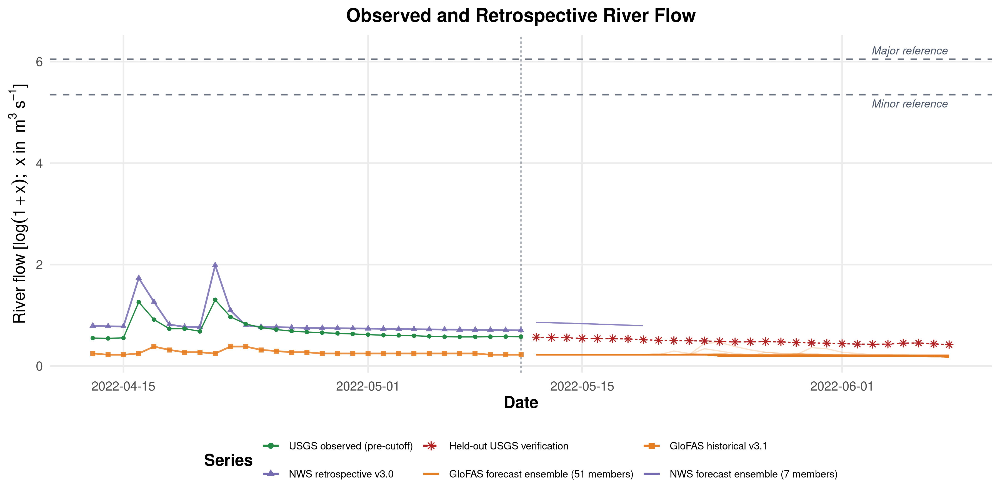
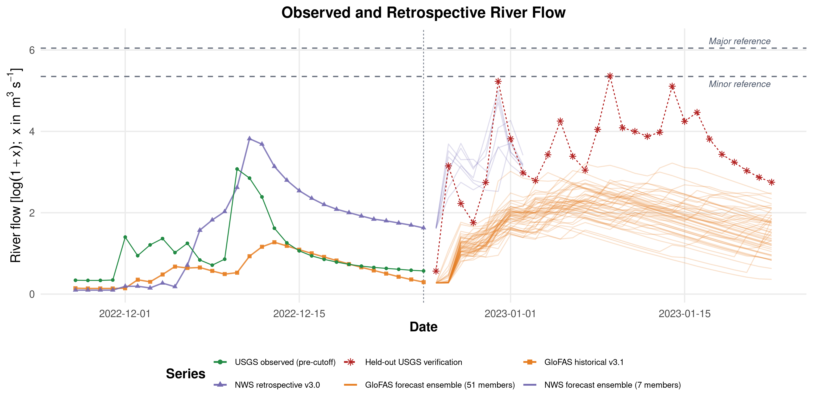

exAL-M-T1 Setup/Support v2 Review
This gallery is the canonical review surface for the corrected cutoff-specific setup/input/support figure family.
2021-01-23
Slug: 20210123_exal_m_t1
Bundle class: histfix_long_history_bundle
Requested history: 1987-05-29 to 2021-01-23
Retrospective available from: 1987-05-29
Forecast window: 2020-12-26 to 2021-02-20
Flow display scale: log1p_cms
Selected-run internal scale: log1p_cms
NWS policy: nws_retro_v21 with nws_retro_v30 tail fill after natural coverage end
GloFAS policy: glofas_hist_v21_htessel_cons
Coverage audit: USGS=True, PPT=True, SOIL=True, GDPC=True, Retros=True
usgs.png
SHA256: f6db38bdd9a09791...
Bytes: 1279614

precip_soilmoisture_climatePC1_faceted_labeled.png
SHA256: 5c16a7efb31b74ff...
Bytes: 2040982

retrospective_log_discharge_plot_faceted.png
SHA256: 28395725f0d5049a...
Bytes: 2052571

forecats.png
SHA256: 0521a75e6f1f5ecd...
Bytes: 918123

2021-11-12
Slug: 20211112_exal_m_t1
Bundle class: histfix_long_history_bundle
Requested history: 1987-05-29 to 2021-11-12
Retrospective available from: 1987-05-29
Forecast window: 2021-10-15 to 2021-12-10
Flow display scale: log1p_cms
Selected-run internal scale: log1p_cms
NWS policy: nws_retro_v21 with nws_retro_v30 tail fill after natural coverage end
GloFAS policy: glofas_hist_v31_lisflood_cons
Coverage audit: USGS=True, PPT=True, SOIL=True, GDPC=True, Retros=True
usgs.png
SHA256: 7e5fbf642df40a03...
Bytes: 1276328

precip_soilmoisture_climatePC1_faceted_labeled.png
SHA256: 0378a5374c2535be...
Bytes: 2049809

retrospective_log_discharge_plot_faceted.png
SHA256: a4cb42a688375ce4...
Bytes: 1926119

forecats.png
SHA256: 9881c599025c5cda...
Bytes: 322419

2021-12-21
Slug: 20211221_exal_m_t1
Bundle class: histfix_long_history_bundle
Requested history: 1987-05-29 to 2021-12-21
Retrospective available from: 1987-05-29
Forecast window: 2021-11-23 to 2022-01-18
Flow display scale: log1p_cms
Selected-run internal scale: log1p_cms
NWS policy: nws_retro_v21 with nws_retro_v30 tail fill after natural coverage end
GloFAS policy: glofas_hist_v31_lisflood_cons
Coverage audit: USGS=True, PPT=True, SOIL=True, GDPC=True, Retros=True
usgs.png
SHA256: ee464d77b856d99b...
Bytes: 1278981

precip_soilmoisture_climatePC1_faceted_labeled.png
SHA256: 5109f521df619ea7...
Bytes: 2051613

retrospective_log_discharge_plot_faceted.png
SHA256: be4d93af315fa393...
Bytes: 1927930

forecats.png
SHA256: 10432e197b797b26...
Bytes: 613689

2022-05-11
Slug: 20220511_exal_m_t1
Bundle class: histfix_long_history_bundle
Requested history: 1987-05-29 to 2022-05-11
Retrospective available from: 1987-05-29
Forecast window: 2022-04-13 to 2022-06-08
Flow display scale: log1p_cms
Selected-run internal scale: log1p_cms
NWS policy: nws_retro_v21 with nws_retro_v30 tail fill after natural coverage end
GloFAS policy: glofas_hist_v31_lisflood_cons
Coverage audit: USGS=True, PPT=True, SOIL=True, GDPC=True, Retros=True
usgs.png
SHA256: fceb4fbf230c46ee...
Bytes: 1281805

precip_soilmoisture_climatePC1_faceted_labeled.png
SHA256: 179b01ed33bb2938...
Bytes: 2058165

retrospective_log_discharge_plot_faceted.png
SHA256: a6fe606062d39a53...
Bytes: 1932978

forecats.png
SHA256: b4b8414bdb812372...
Bytes: 207231

2022-12-25
Slug: 20221225_exal_m_t1
Bundle class: histfix_long_history_bundle
Requested history: 1987-05-29 to 2022-12-25
Retrospective available from: 1987-05-29
Forecast window: 2022-11-27 to 2023-01-22
Flow display scale: log1p_cms
Selected-run internal scale: log1p_cms
NWS policy: nws_retro_v21 with nws_retro_v30 tail fill after natural coverage end
GloFAS policy: glofas_hist_v31_lisflood_cons
Coverage audit: USGS=True, PPT=True, SOIL=True, GDPC=True, Retros=True
usgs.png
SHA256: eeef68672852e4a5...
Bytes: 1278817

precip_soilmoisture_climatePC1_faceted_labeled.png
SHA256: a450b7fa331403f6...
Bytes: 2062646

retrospective_log_discharge_plot_faceted.png
SHA256: a670b1de369c4a57...
Bytes: 1935883

forecats.png
SHA256: 8a3c1326949a6a85...
Bytes: 701065
